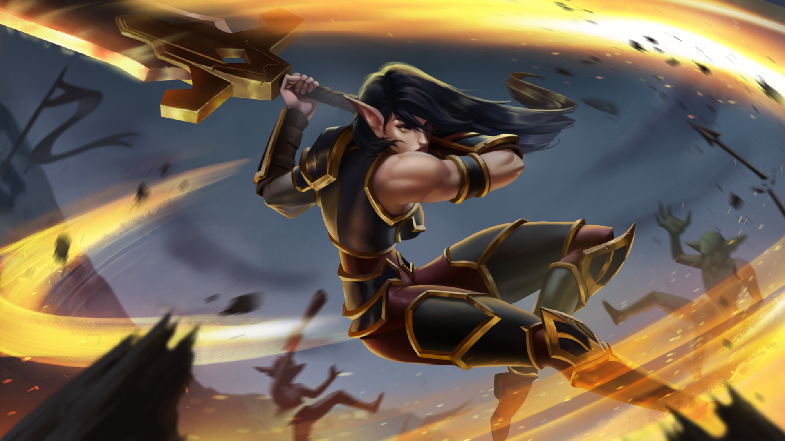
Esse jogo, suas mecânicas, artes e história, são feitos por humanos.
Celesia Card Game é um jogo de cartas ambientado em Celesia, um mundo fantástico onde a presença do poderoso mineral celesium escala os confrontos para níveis épicos. No mundo de Celesia, o celesium é um fator basilar para a vida em sociedade. No Card Game, esse mineral não poderia ser um recurso menos importante: o uso dele consegue mudar o rumo de uma partida.
No jogo, a PJ controla um Guardião, personagem central do baralho, para enfrentar seus inimigos. Cada Guardião tem personalidade e características próprias, tendo cartas exclusivas para usar. Essa é a primeira grande escolha em Celesia CG.
Durante a partida, o uso de Atributos é o recurso principal para que a PJ execute sua estratégia de combate, podendo usar um tipo de Atributo no deck, como indicado no Deck Introdutório, ou mais de um tipo, criando estratégias únicas e personalizando seu baralho. Em meio ao combate, a PJ gera o valioso celesium, que permite o uso de cartas mais poderosas exclusivas do Guardião em jogo.
A partida tem uma estrutura de turnos dinâmicos que permitem jogadas de todas as PJs até que ninguém tenha mais jogadas a serem feitas. A sucessão de turnos acaba quando um Guardião derrotar o adversário e, assim, vencer a batalha.
O jogo tem os Decks Introdutórios, baralhos prontos para quem quiser aprender a jogar. Quando a Pessoa Jogadora (PJ) se sentir à vontade, porém, pode construir seu próprio Deck. A dinâmica de construção de baralho é semelhante à criação de uma ficha de RPG, uma alternativa para que a PJ crie um Deck personalizado e viva da sua maneira o mundo de Celesia.
Quer saber mais? Nos siga em nossas redes!
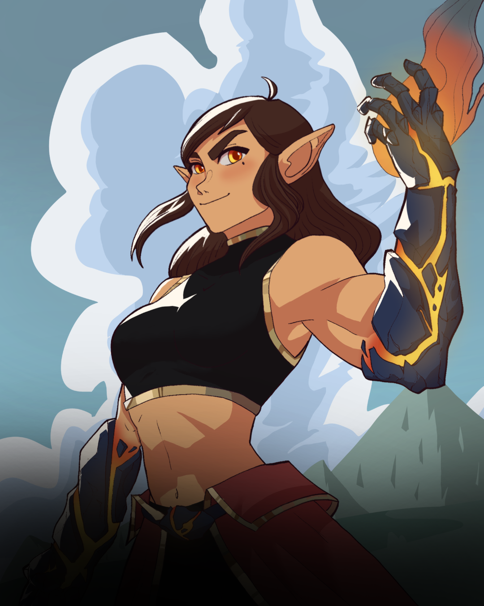
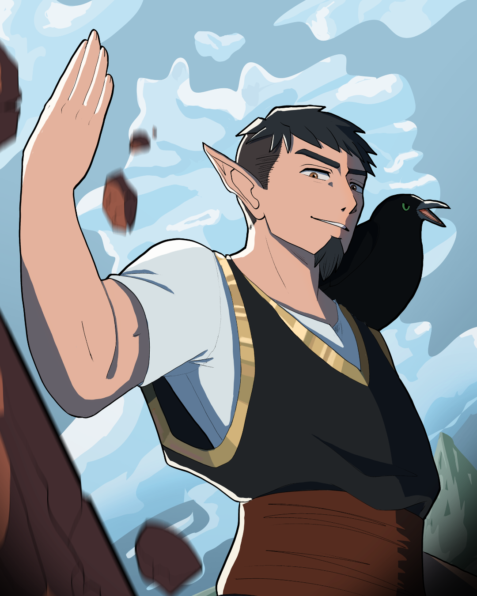
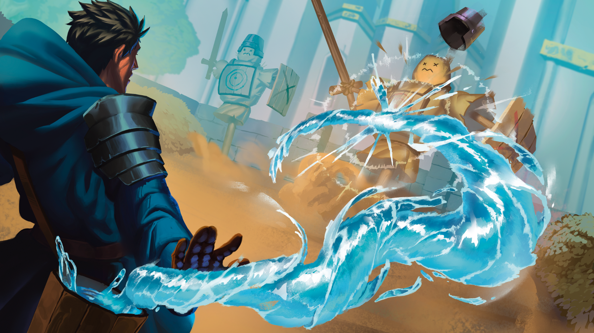
Celesia é um mundo vasto onde a magia, o poder celesiano e a Realidade ditam a vida de todos os seres. Neste universo, as regras de ciência, crença e poder são únicas. A Realidade não aceita incoerências e Kaibor, o expansivo Império do Alvorecer, não aceita desordem. Em Celesia, a fantasia é o cotidiano: griforujas, draconianos, cidades subterrâneas, poderes inimagináveis; tudo isso pode ser achado em um vilarejo próximo ou em uma floresta apodrecida.
Em meio a este mundo fantástico, porém, se deve andar com cuidado: o mínimo contato com um mineral singular muda a vida de qualquer ser vivo. Celesium, pedra azul escura cujo centro reflete infinitas constelações, dá a quem lhe toca morte ou poder, virando celesiano, portador único de um poder específico, ou tendo sua vida findada. Não há meio termo. Não há volta. Por isso, entre dragões e cogumelos sapientes, quem entrar no mundo de Celesia deve caminhar com atenção; nem tudo que reluz é ouro, nem todo caminho tem volta.
Em Celesia, a magia é natural e cotidiana. Os conhecimentos mágicos e científicos, junto com poderes espirituais e outras sabedorias, são importantes ferramentas para as sociedades em Celesia. Para muitos, são poderosas armas. Mas não são as únicas.
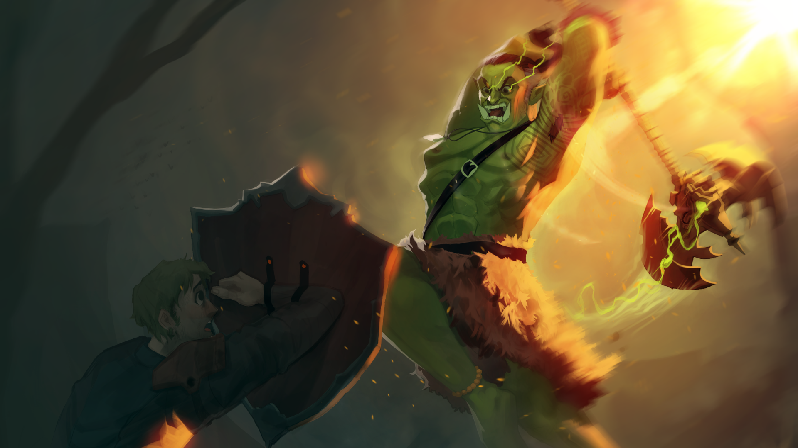
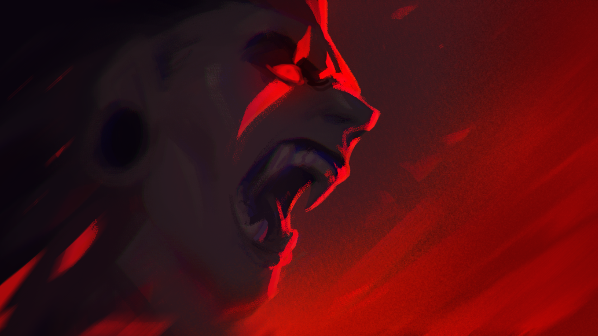
Tocar em um pequeno fragmento de celesium é suficiente para matar alguém; caso essa pessoa sobreviva, porém, terá um poder único. Essa singularidade, bem-quista ou não, é, em Celesia, uma das mais cobiçadas — ou temidas — armas. Para muitos celesianos, foi um risco consciente; para outros, um contato indesejado ou descuidado. Mas o celesium não escolhe quem lhe toca. Ele acontece e fim. Morte ou poder.
O Império de Kaibor esbraveja as palavras de Paz pela Ordem como justificativa pelas suas ações expansivas. Após o desaparecimento do auto-declarado Emissário Grigor, o Imperador Arathul regeu uma agressiva expansão imperial, usando os Guardiões do Alvorecer como principal arma. Rhaz’mondur dos desertos, Oyamãs das florestas, Veridinaes, Anões, Alghures, humanos de todo canto, todos os povos deveriam reconhecer a sua soberania. Conflitos eclodiram e poucos grupos insurgentes conseguiram resistir às garras imperiais.
Então veio o Colapso. O calendário volta ao ano zero. Celesia se vê em meio ao caos. A Ordem como se conhecia acabou.
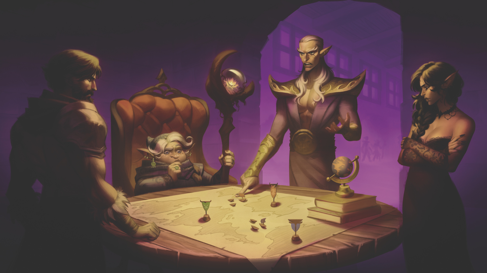
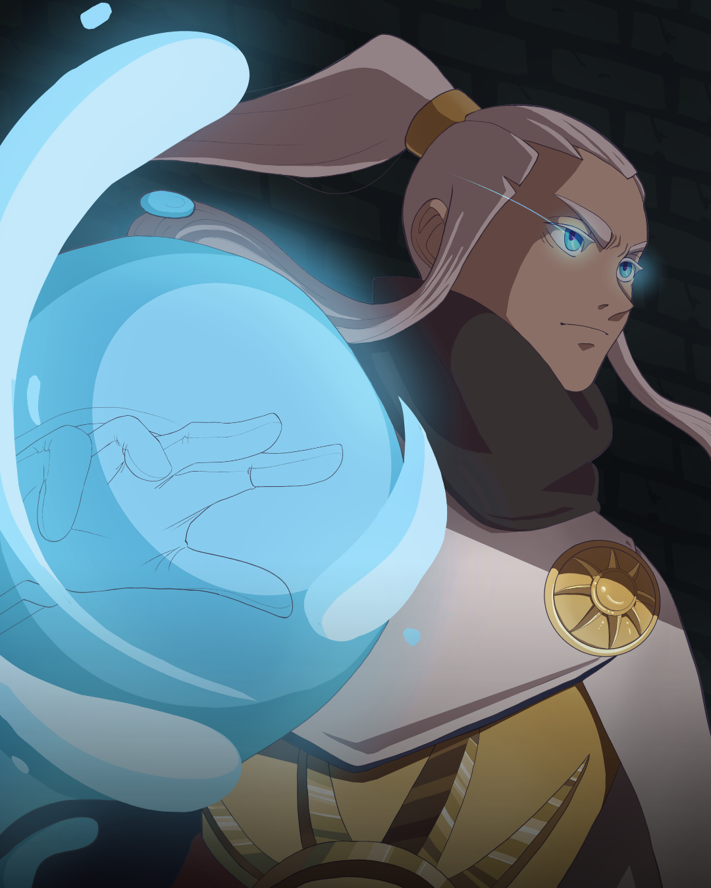
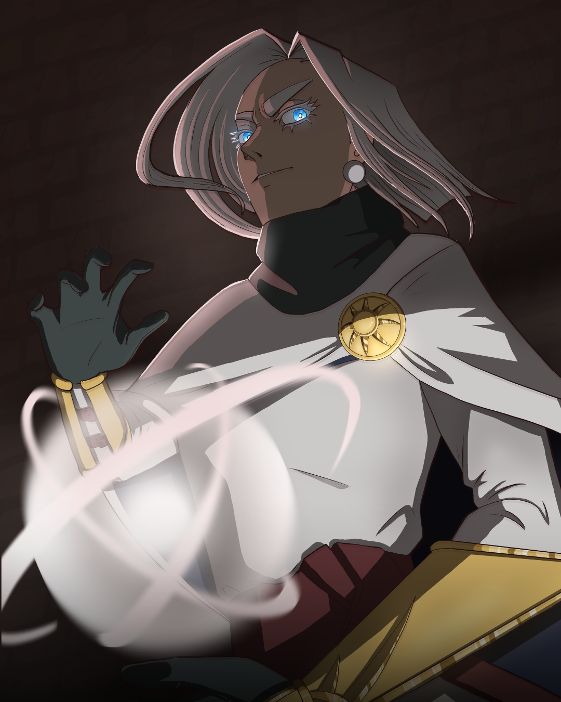
Celesia Card Game é fruto do trabalho independente de uma equipe multidisciplinar e diversa. Isso é uma forma bonita de dizer que este é um jogo feito por um grupo de amigos, com diferentes profissões e habilidades, que decidiu compartilhar seu universo próprio com o resto do mundo.
Somos um projeto independente inicialmente criado por um grupo de amigos que se apaixonou pelo mundo que um certo mestre criou para a sua campanha de RPG: o mundo de Celesia. O tal mestre Felipe, então, passou a pensar mais naquele universo. A campanha passou a ser o conforto de quem jogava. Os personagens, seus melhores amigos. Quatro anos e uma pandemia depois, o grupo tomou uma decisão: compartilhar o mundo de Celesia com quem quisesse se aventurar por ele.
Em 2023, Celesia Card Game começou a tomar forma. A escolha de transpor a aventura de RPG a um jogo de cartas veio para que mais pessoas tivessem acesso. A história primordial, jogada nos anos anteriores, passou a ser polida para que qualquer pessoa consiga mergulhar no universo fantástico tanto através do produto quanto da narrativa.
Atualmente, Celesia Card Game é um jogo de cartas com universo e leis próprias, onde as pessoas são convidadas a experienciar dinâmicas autênticas sem perder a imersão no mundo mágico de Celesia.
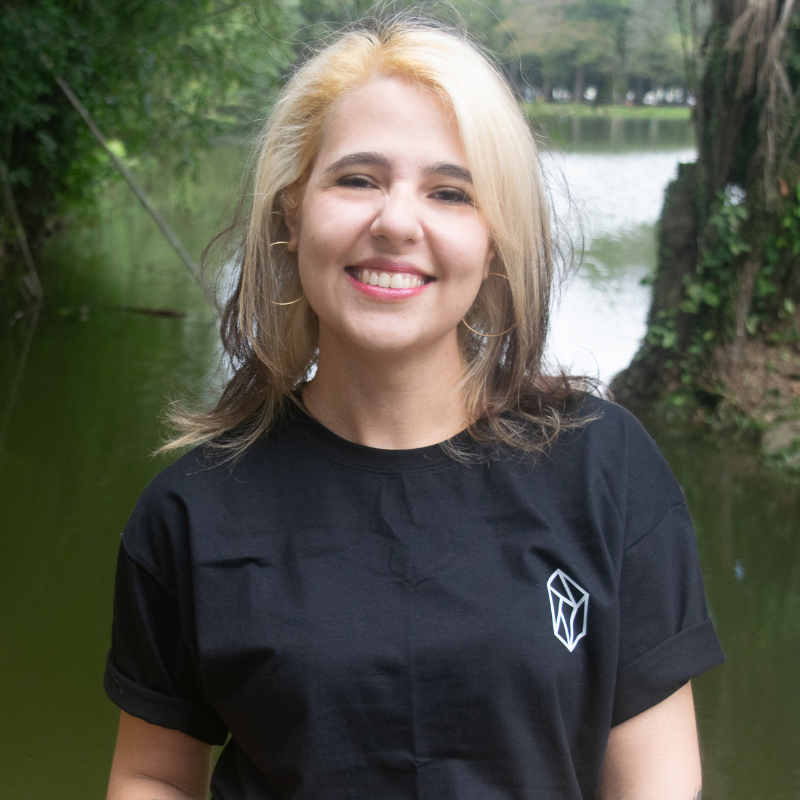
Formada em Design Gráfico e atuante na área há anos, me tornei Co-criadora de Celesia pela paixão (e quase obsessão) de criar mundos e culturas diversas. Apaixonada por toda e qualquer forma de arte, atuo como Diretora de Arte e Designer em todas as frentes, traduzindo ideias originais e criativas para uma linguagem visual que represente a essência de Celesia.
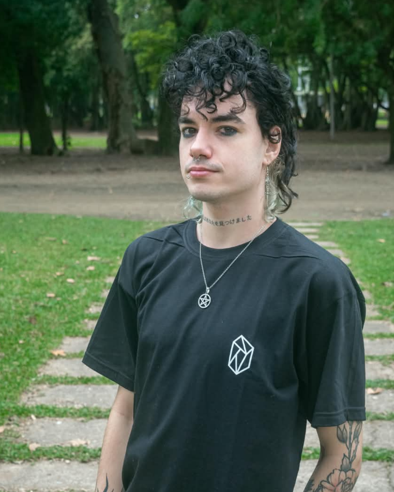
Apaixonado por tudo que é fantasioso, estranho e esquisito. Vive entre a ironia e a imaginação, com a cabeça cheia de ideias, sonhos e mundos que talvez nunca existam. Um pouco caótico, um tanto HORRORSHOW, e sonhador demais para pertencer completamente a este mundo.
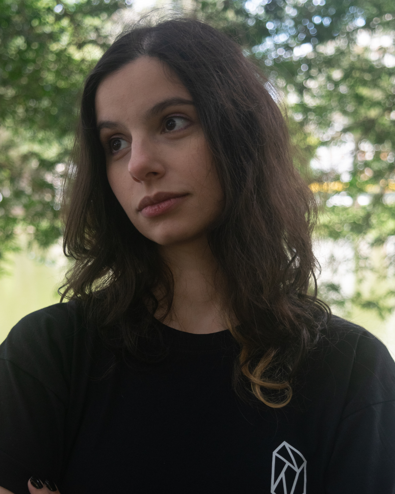
Elena (sem H) é formada em Escrita Criativa, mestre e doutoranda em Letras. No projeto Celesia, é a Guardiã da Lore, faz parte dos times da comunicação e de eventos.
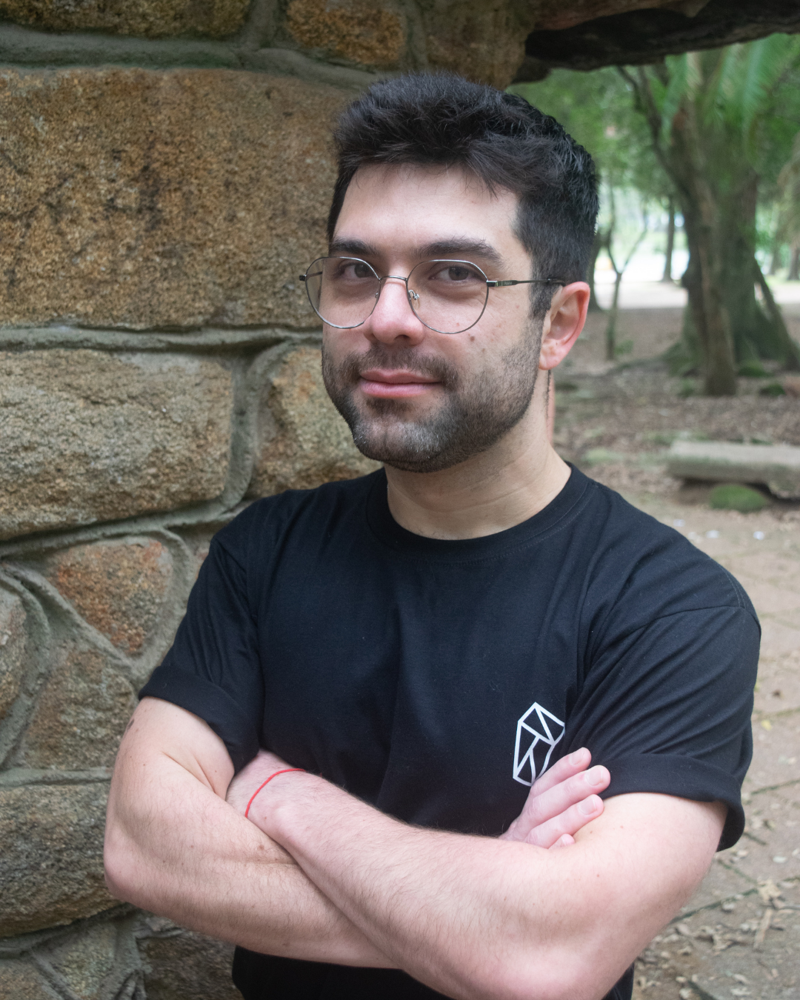
Felipe é co-criador do universo, do jogo e dos próximos projetos de Celesia que ainda estão guardados a sete chaves. Ele é movido por fantasia, magia, videogames, música e cinema. Para ele, se a matemática é a linguagem universal, a arte é o catalisador emocional universal. Criar mundos é a sua grande paixão, e Celesia é o seu maior orgulho, o legado que escolheu construir e deixar para o mundo.
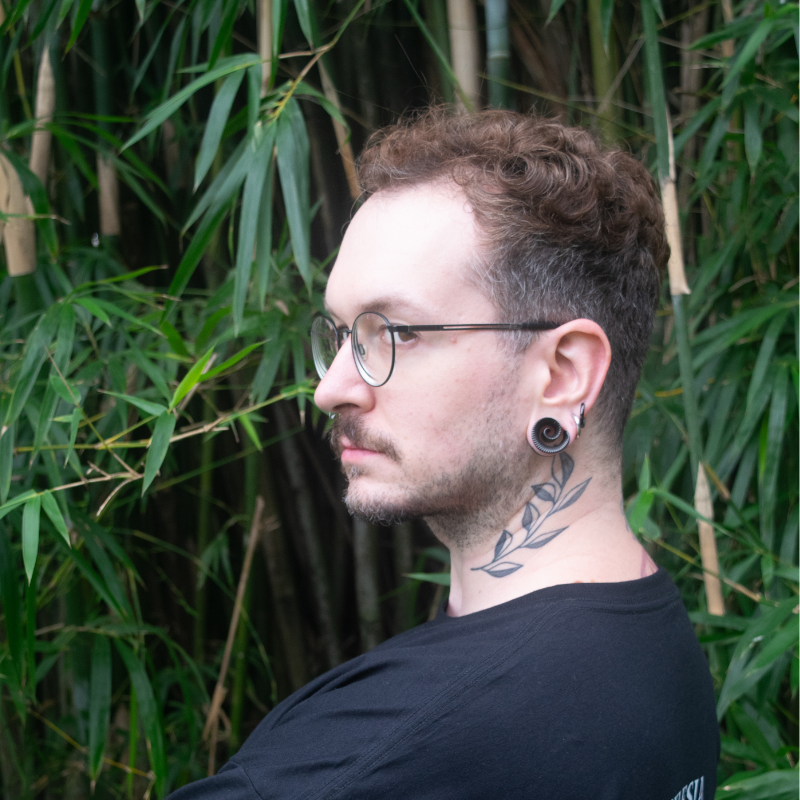
Fã de filmes de terror, obcecado por fantasia e apreciador de animes de qualidade duvidosa. Acredita que as melhores histórias têm premissas simples bem desenvolvidas e que não se deve separar arte e artista. Sempre foi fissurado por RPG e jogos de tabuleiro, criar cenários e mundos sempre foram parte de seu cotidiano.
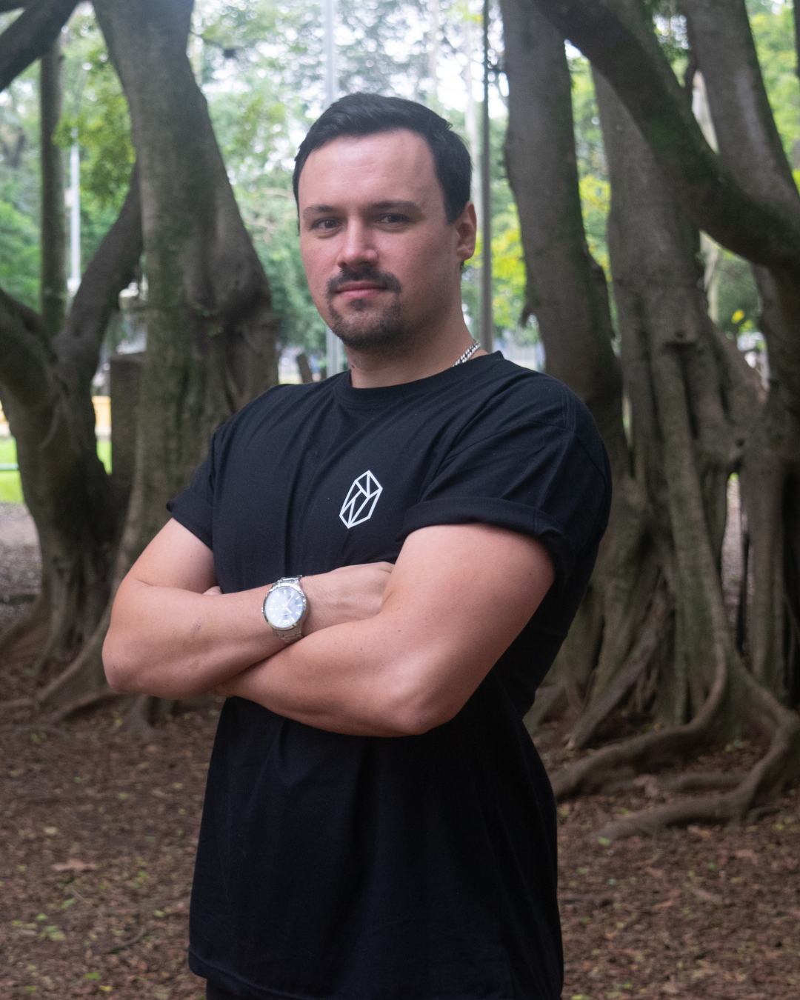
João Carlos é um dos responsáveis por dar vida a Celesia por meio do desenvolvimento do card game. Atuando tambem na comunicação e como mediador de conflitos, busca manter a harmonia entre as diferentes forças que movem o projeto. Entusiasta de fantasia, videogames e cultura nerd, acompanha a jornada de Celesia desde seus primórdios como RPG, contribuindo para transformar esse universo em uma experiência que transcende as páginas e ganha vida a cada partida.
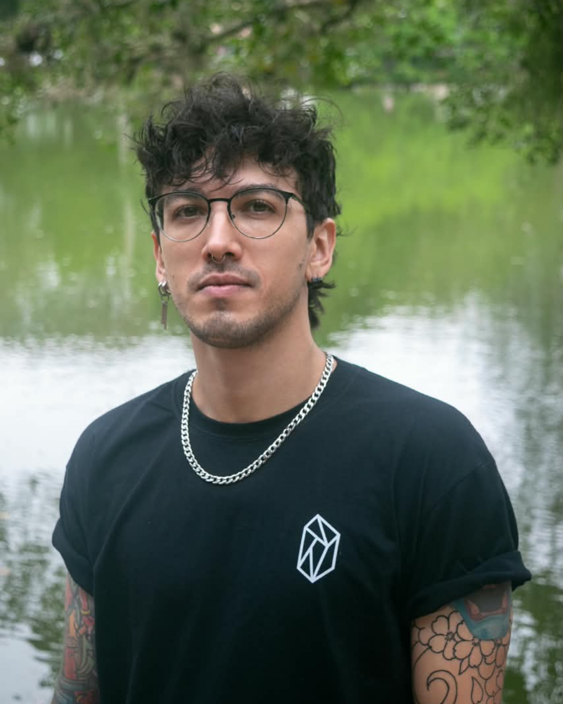
Ruka, ou Lucas, entusiasta experiente de mundos e sistemas fantásticos. Em Celesia, é responsável por decisões dos times de arte e de lore, sendo líder em uma área ainda restrita do projeto.
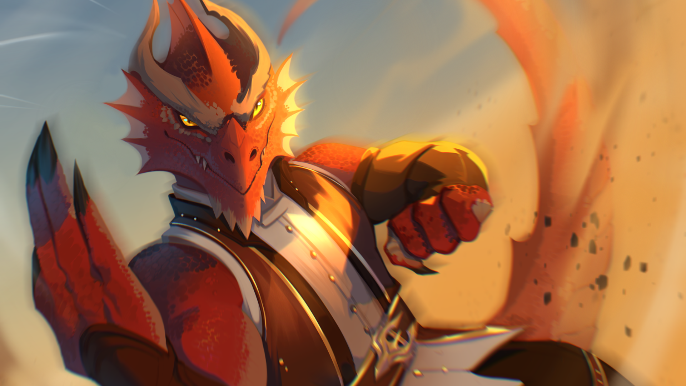